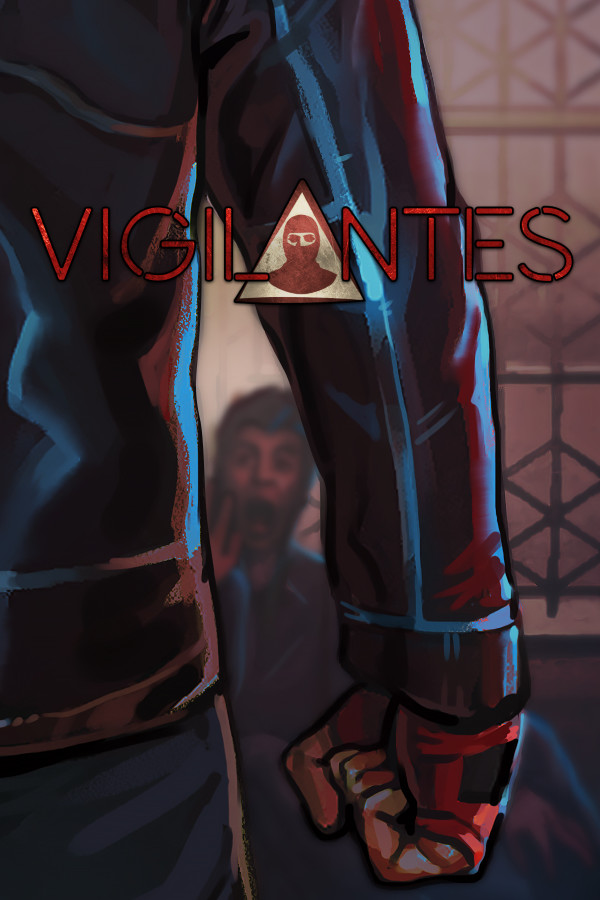

Vigilantes
Vigilantes
Details
|  | |
| Playtime | Not Played |
| Last Activity | Never |
| Added | 4/16/2022 10:07:50 |
| Modified | 5/3/2022 21:04:16 |
| Completion Status | $Check Out |
| Library | Playnite |
| Source | Wanderer |
| Platform | PC (Windows) |
| Release Date | 10/3/2018 |
| Community Score | 76 |
| Critic Score | |
| User Score | |
| Genre | RPG Strategy |
| Developer | Timeslip Softworks |
| Publisher | Timeslip Softworks |
| Feature | Single Player |
| Links | Community Hub Discussions Guides News Store Page PCGamingWiki Achievements |
| Tag | [EMT] Logo Missing |
Description
Next Game Announced!
Prometheus Wept, a turn and party based RPG in a setting which combines post-apocalyptic with a splash of cyberpunk, now has a Steam page. If you'd like to be notified of updates, you can add it to your wishlist and sign up to the community hub.https://store.steampowered.com/app/1208110/Prometheus_Wept/
About Vigilantes
Vigilantes is a combat focused, turn-based tactical RPG set in the declining, crime riddled city of Reiker. The game offers hardcore squad-level combat in a gritty neo-noir setting, intel gathering through surveillance and interrogation, a detailed character system, base facilities, crafting, and much more.Key Features
- Party-Based Tactical Combat System, including lethal and non-lethal attacks, powerful perk-based activated abilities, attacks of opportunity, cover, aimed and special attacks.
- Deep Character System: build the ultimate crime-fighting team using the UPLIFT system which comprises 6 stats, 9 skills and allows for a variety of viable builds. Further customise your characters with over 60 perks.
- Gather Intel: Run surveillance and interrogate defeated enemies to locate each gang's leadership and facilities.
- Story: Experience the hard-boiled story of a group of vigilantes waging war against the overwhelming might of the criminal underworld. Gain advantages in combat through skill checks and choices in dialogue, and help out citizens in need.
- Adversary System: If an enemy manages to flee, they will become more powerful and you will have to face them again later. Take them down quick!
- Crafting: Upgrade weapons from 9 distinct classes and craft special items, such as hot-loaded ammo, armour, and medical items.
- Base Facilities: Build and upgrade 5 facilities (gym, library, firing range, surgery, workshop) to gain bonuses and access advanced crafting options.
- Reactive AI: An enemy that reacts to your actions, by setting up ambushes, and is responsible for recruitment, building facilities, improving gang equipment and training.
So What Sets Vigilantes Apart From Other Games?